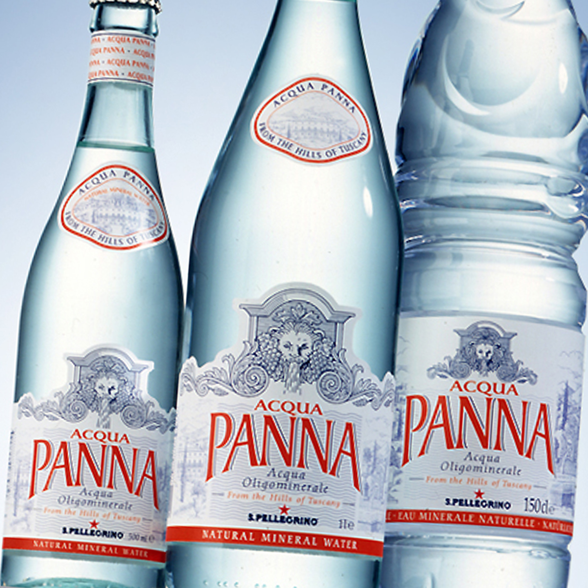

S.Pellegrino es un agua mineral natural que fluye del
manantial natural de Val Brembana, en la región de
Lombardía, en San Pellegrino Terme, a los pies de los
Alpes italianos.
24 SAN PELLEGRINO x 500 cc3 $1.750-.
12 SAN PELLEGRINO x 1000 cc3 $1.650-.

AQUA PANNA
Acqua Panna es el agua mineral natural sin gas que
acompaña a San Pellegrino en las mejores mesas de todo el mundo.
24 AQUA PANNA x 500 cc3 $1.750-.
12 AQUA PANNA x 1000 cc3 $1.650-.
SANTA QUINA
u característica diferencial es que está elaborada con quinina
natural proveniente del Perú. La búsqueda de ingredientes de
primera calidad también se nota en el uso de azúcar refinada de
primera línea y en la selección de cítricos, donde predominan
el limón, el pomelo, la naranja y la mandarina.